006
Color and Texture
色彩与肌理
006
色彩与肌理
Yarn is wrapped around photographic works to harvest colour and texture directly from image and fibre. The extracted palette drives a set of final looks — silhouettes grown from the same tangled chromatic field that began as a material experiment.
将纱线缠绕于摄影作品之上，直接从图像与纤维中采集色彩与肌理。提取的色盘驱动成衣最终造型——廓形自同一缠绕的色彩场域生长，始于材料实验。
Look
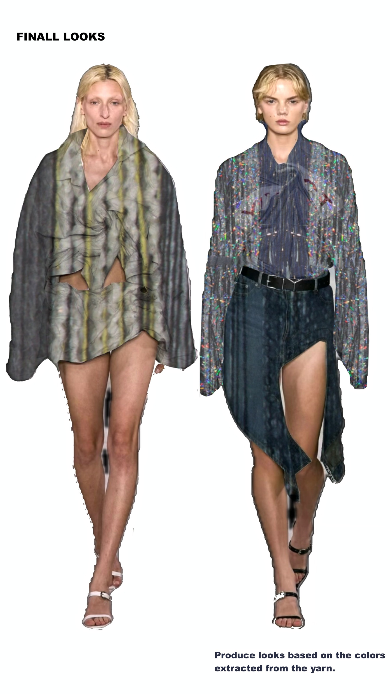
Look · Final looks from yarn colours
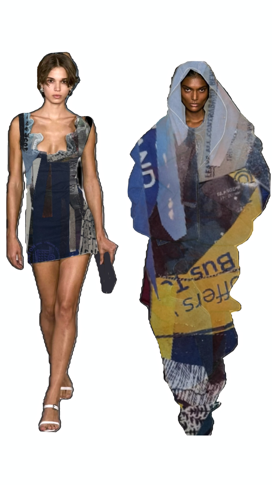
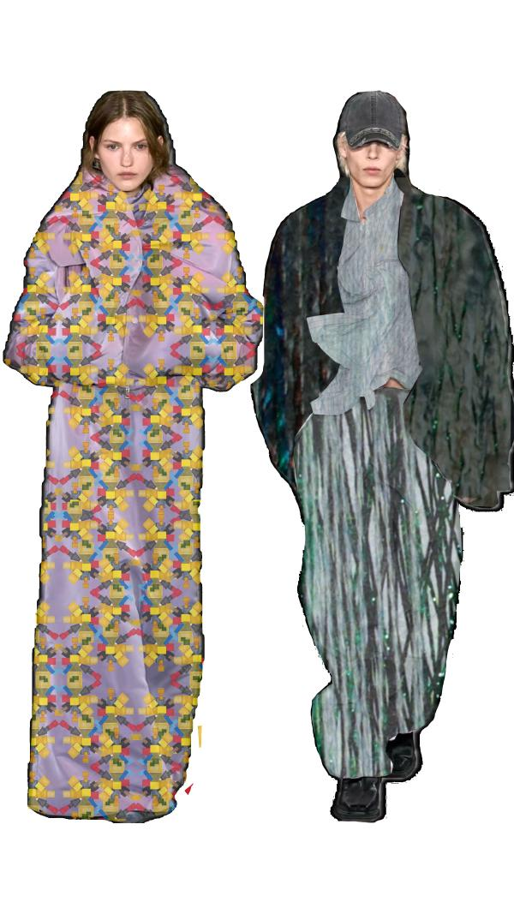
Look · Colour & texture silhouettes
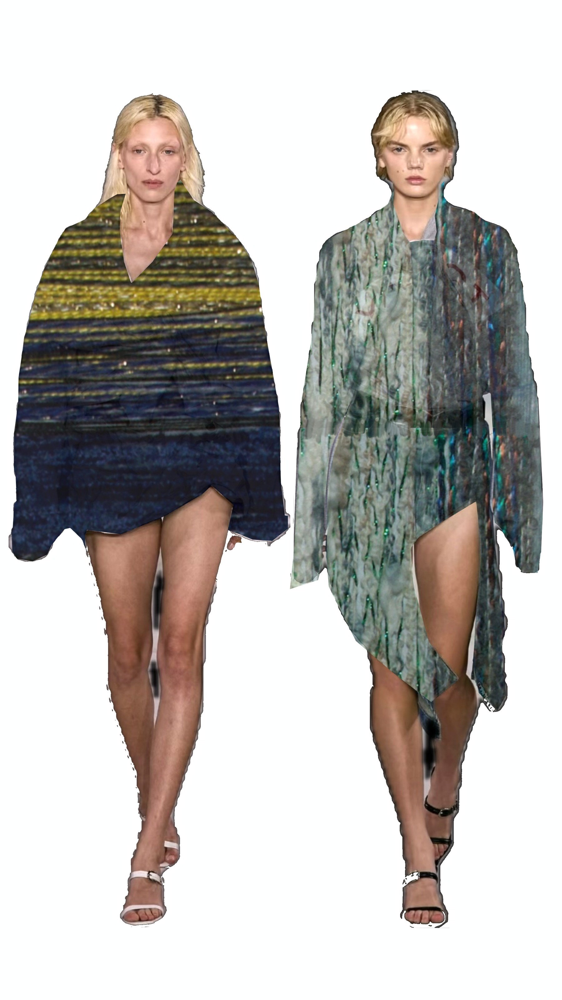
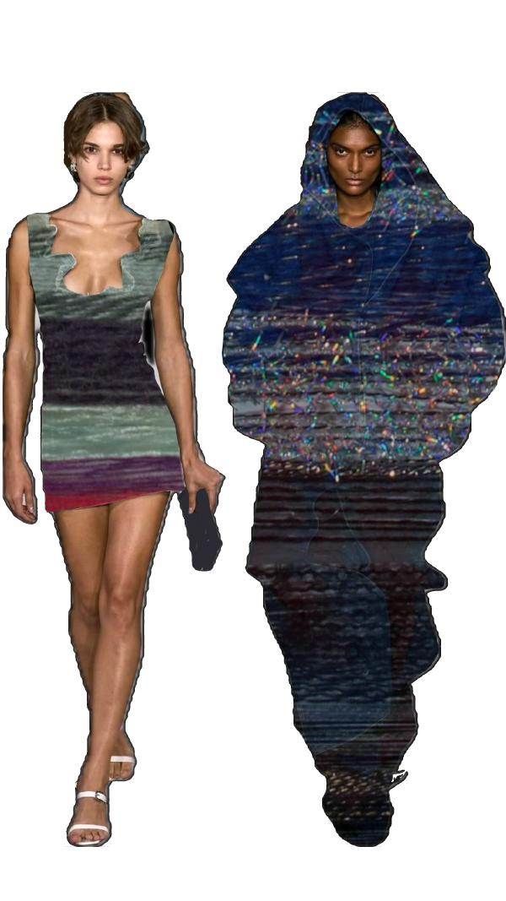
Look · Continued final looks
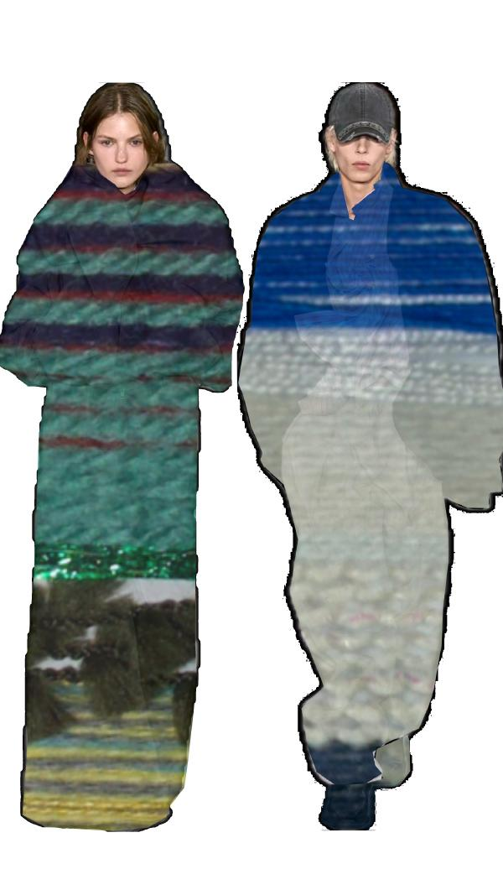
Look · Closing frame
Process
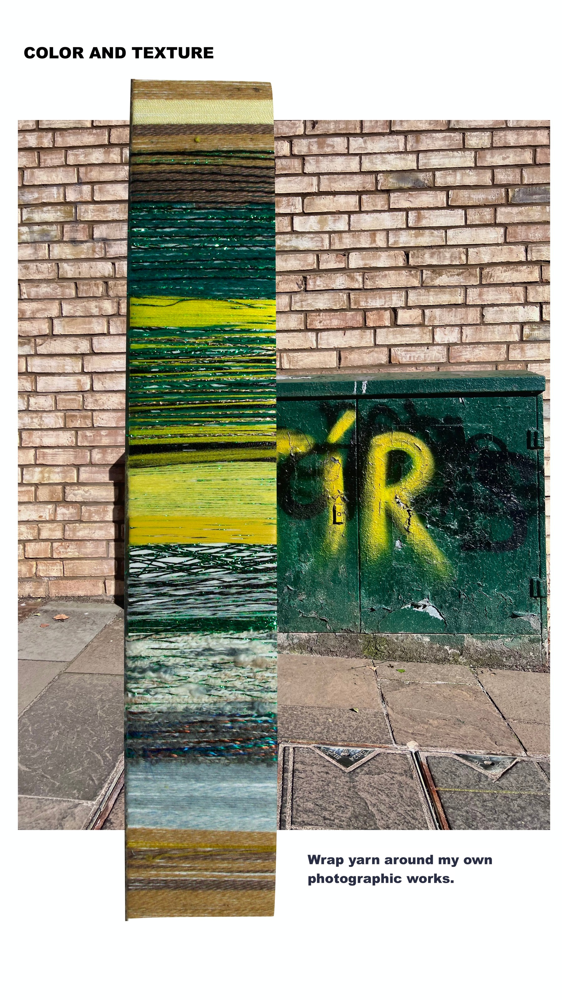
Process · Yarn wrapped around photographic works
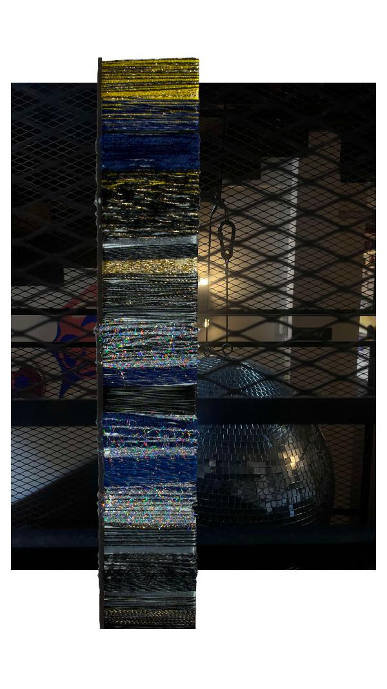

Process · Colour extraction studies
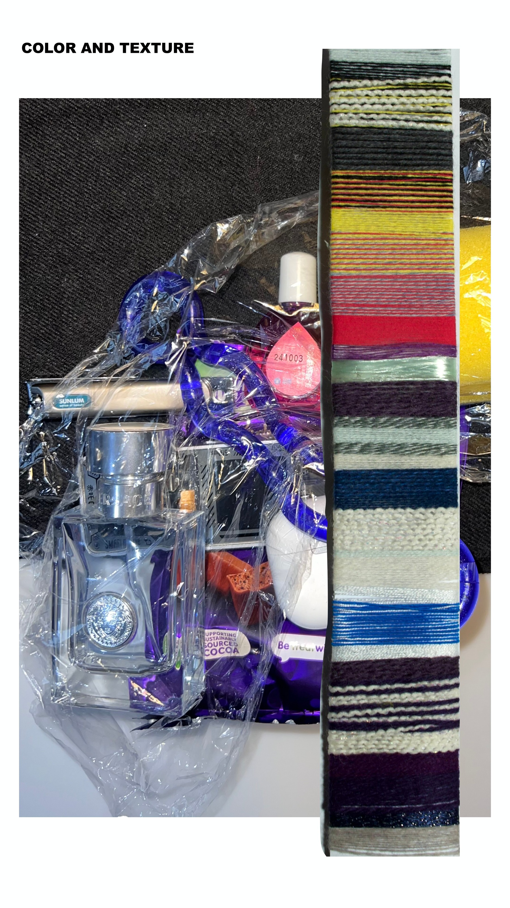
Process · Palette from yarn & fibre
Detail
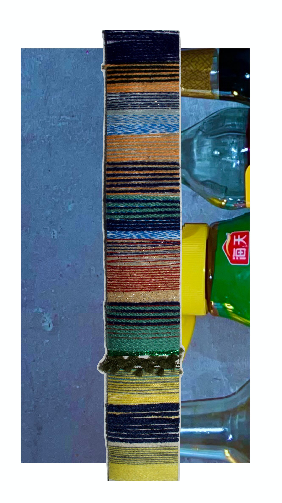
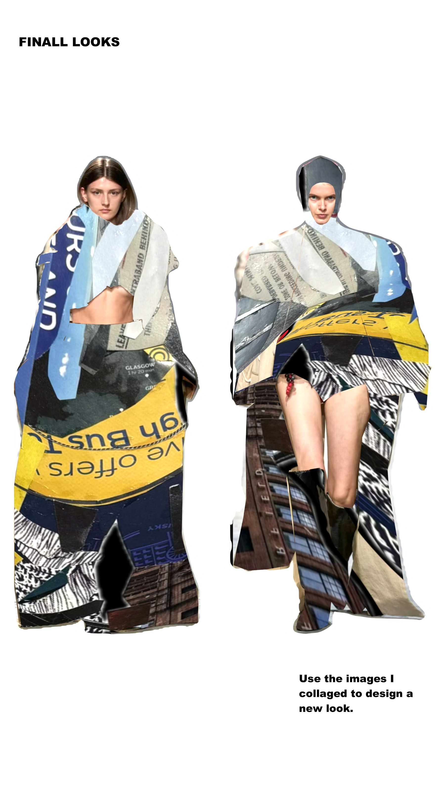
Detail · Photo / 3D collage experiments
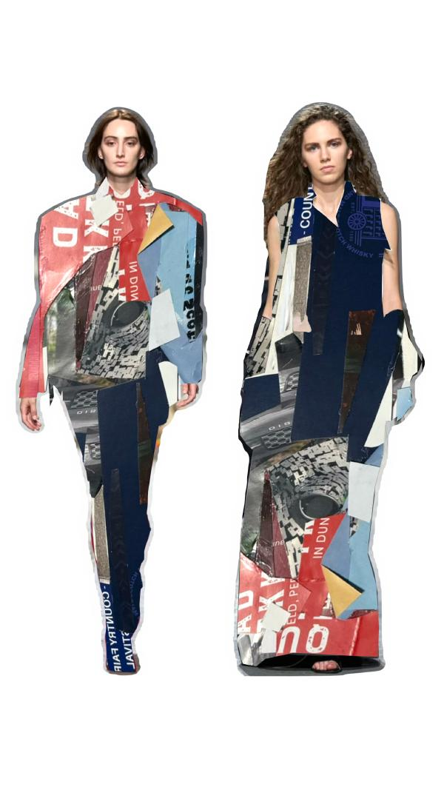
Detail · Collage final look